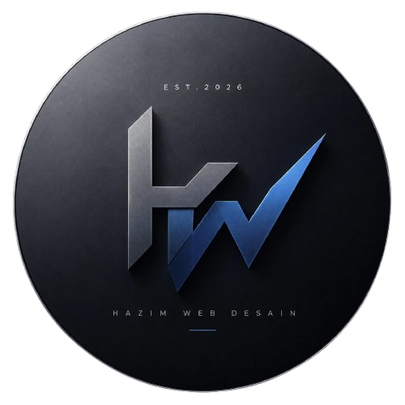

Saya merupakan alumni Pondok Pesantren Lirboyo yang kini fokus
membangun website modern dengan tampilan profesional dan terstruktur.
Membawa nilai kejujuran, ketelitian, dan tanggung jawab ke dunia digital,
serta membuktikan bahwa santri juga mampu bersaing di bidang teknologi.
